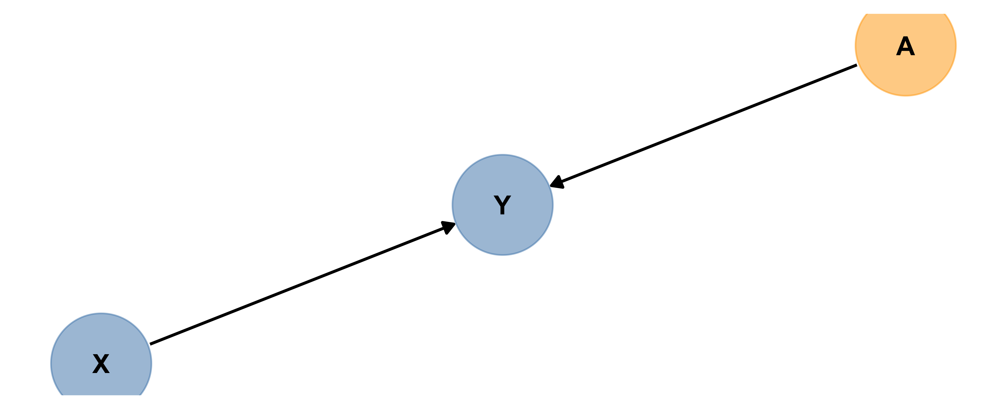
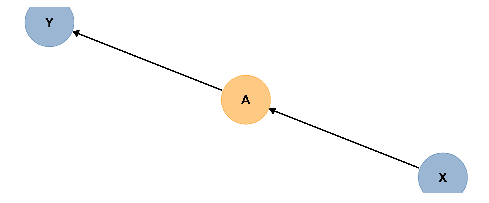
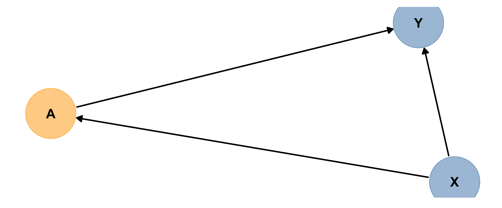
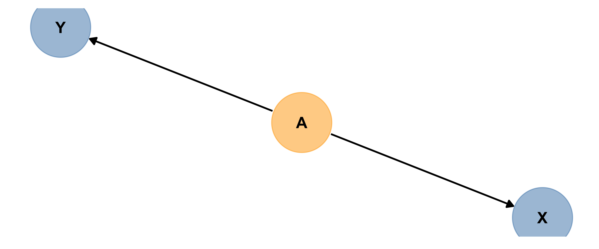
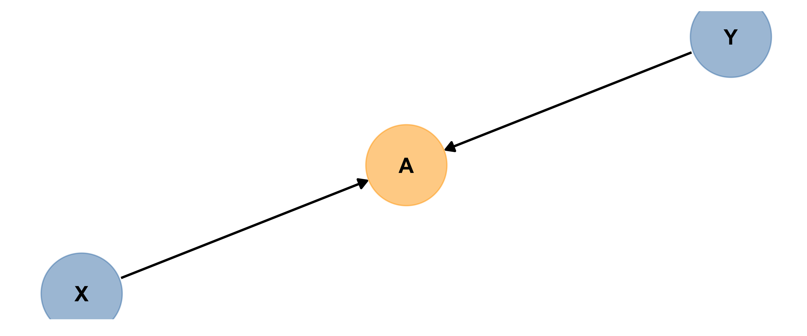

20 Model Planning for Inference
20.1 Motivation
Just as we imagine before we start coding to create graphics, we ought to think before we start fitting models.
Traditional ways of interpreting statistical results are premised on the idea that you made a plan, got some data, fitted the model you planned, and want to draw conclusions.
If, instead, you got data, scrutinized the data, fitted lots of different models, and now want to report results from the one that fitted best…well, generally things tend to go wrong. This is especially true if you use the data to lead you from a more complex to a simpler model. As Harrell (2015) points out in section 4.3, the problems are huge:
- Uncertainty underestimated (overconfidence: standard errors and confidence intervals too small, \(R^2\) too big, unfounded confidence that associations are real when they may not be).
- Spurious relationships look important and slope estimates are biased high
- If testing hypotheses, p-values too small
How can we avoid these problems? Some more insight will come when we consider model assessment and selection in future sections. For now, we need to remember:
Fitting and interpreting one well-considered, sensible model is prefereable to trying many things and then trying to choose among them later.
And remember, this is al if inference is the goal of modeling - things are quite different if you are doing predictive modeling.
20.2 Response and Predictors
A regression model is our attempt to quantify how a response variable of interest changes when a set of predictor variables change.
So, to begin, we need to identify our (one) response variable – the thing we are most interested in measuring or predicting or describing or understanding.
Then, we need to identify a set of predictor variables that we expect to be associated with changes in the response. (If we are planning an experiment, they should be variables we can collect data on; if working with data already collected, they must be in or derived from the data available.)
How do we choose which predictors to include, and how many?
20.3 Expertise
First, rely on experts and previous experience. If you know the context of the problem well, you have a good sense of the predictors that will be of interest. If you don’t, then you should consult experts (or published work on the topic).
There are also practical limits on the number of predictors you can reasonably consider, given a dataset.
20.4 Dataset Size (n/15 rule)
One important consideration, when planning a regression model, is: How many predictors can I reasonably include?
It depends on the size of the dataset: it takes several observations to get a good estimate of any statistics, so it makes sense that fitting a model with lots of predictors will require a bigger dataset. Each additional observation may add a little bit more capacity for fitting a more complex model.
And if you try to fit too many, the chances of overfitting increase. Overfitting is when you model noise as well as signal, capturing in your model apparent relationships that actually exist only in the current dataset, not in reality.
For linear regression, Harrell (2015, Chapter 4.6) offers a rule of thumb: the number of parameters being estimated, \(p\), should be less than \(\frac{n}{10}\) or \(\frac{n}{20}\). To give just one standard rule of thumb, we should aim for \(p < \frac{n}{15}\). \(n\) is the sample size (number of rows in the dataset).
This “n/15 rule” is a very rough rule of thumb - sometimes it seems you can get away with estimating a few more parameters than it says, and sometimes fewer (particularly in the case of categorical predictors where the observations are not evenly distributed across combinations of categories). But it gives us a reality check and a starting point for planning.
Remember, n/15 is a ceiling – and upper limit on the number of parameters you could estimate. It’s not a goal! You may have less.
20.5 Causation Revisited
In most intro stat courses, students learn to repeat statements like: “Correlation doesn’t imply causation, and only randomized experimental studies can draw causal conclusions.”
Well…kind of.
In data science, big observational datasets (collected in the absense of a structured study design) are really common. There are also many scenarios of interest where randomized experiments are just not possible on practical and ethical grounds.
Some blatant examples: experiments in which people were randomly assigned to dislocate their shoulders to investigate factors influencing recovery, or start smoking to see if they get cancer, or expose themselves to someone with a contagious disease to see if they become ill. In many situations, observational work is the only real option. What’s a researcher to do?
In recent decades the field of causal inference has made great strides in thinking intelligently about how best to make the most reliable conclusions possible about cause and effect, when observational data is all you have. To begin to understand, we have to define a few terms: direct causation vs. indirect causation, and three alternative situations: confounders, mediators, and colliders. This field is new and technical, but the next video is about the most concise and clear primer I know of (with concrete examples).
You may also watch it outside this tutorial.
Mediators, Moderators, Precision Covariates
OK, wait a sec. The video didn’t cover mediators! A mediator is another term for what the video called an “indirect cause” – a link in the middle of a causal chain. The mediator explains or is part of the process by which an upstream cause leads to an effect.
There are two other variable types it may be useful to name, too:
- Precision covariates affect the response variable of interest, without having any causal links at all to the “main” predictor of interest. We include them in models when we can, to get more precise estimates.
- Moderators interact with the main predictor of interest. The cause-effect relationship between the main predictor and the response varies depending on the value of the moderator variable. (Moderators might additionally affect the predictor and/or the response directly, so they may share some features with precision covariates and confounders.)
20.6 What’s a Causal Diagram?
A causal diagram is a picture mapping the causal relationships between key variables. They are used when researchers are interested in quantifying causal relationships between variables – not just, “is X associated with a change in Y?” but “does X cause a change in Y?”
To make causal conclusions with confidence outside the context of a randomized, controlled experimental study is a big challenge, and mapping out starting assumptions about relationships between variables is just the first part.
Even if we are not necessarily trying to make causal conclusions (we won’t be here, with observational data), when you model relationships of several variables, a causal diagram helps you make smart, thoughtful choices about the ones you include in your model and the ones you leave out.
The diagram surfaces your starting assumptions about relationships between variables. It makes your assumptions transparent (to others and to you!) and guides choices about what to include/exclude from a model.
People also call causal diagrams DAGs (for Directed Acyclic Graphs) since they are a specific application of that [broader] type of mathematical graph. So, every causal diagram is a DAG, but in math there can be DAGs that are not statistical causal diagrams.
In a causal diagram each box is a variable, and arrows connect causes to effects (with the arrowhead pointing from the cause to the effect).
20.7 Diagrams in R?
A short note about drawing causal diagrams in R. The tools to do this are rapidly evolving, and for now, many of them can be a bit frustrating and idiosyncratic.
To keep things simple, an option is to just draw your diagrams by hand, and take a photo of them (if on paper) or save the image file (if electronic). If using a server, you’ll need to upload the image, but then you can pretty easily include your image in a Quarto file.
If you’d like to create your diagrams in R, you might want to consider using mermaid or graphviz diagrams, which Quarto supports.
Another somewhat popular option is the R package dagitty, although take care (its diagrams are not quite as pretty or customizable, and it sometimes throws inscrutable errors because of buried conflicts with other packages we use).
You are welcome to explore these options if you’re motivated, but hand-drawn diagrams are fine for our course – for us, the point is not making camera-ready diagrams, but using diagrams to plan our models well.
20.8 Variable Types
In a multi-variable analysis, there is often one key variable of interest (measuring “response” or “outcome” or “effect”) and another one which may influence it, and is the focus of greatest research interest (a key “predictor” or “cause”).
But there are generally other variables in the mix that are somehow relevant to understanding the predictor – response relationship. How can we classify (and diagram) them?
In all examples below, X is the predictor of greatest interest and Y is the response. (A is the other variable.) The definitions below all depend on a specific X and Y having been chosen: the other variable types are defined relative to the X-Y relationship.
Precision Covariate
Here’s an example of A acting as a precision covariate. Precision covariates are also known as competing exposures.
Based on the diagram, can you explain in words what a precision covariate is?
A precision covariate affects only the response variable.
Best practice is to include precision covariates in a model trying to measure the size of the effect of X on Y, to get the most precise estimates possible…but if you don’t, it won’t bias your estimate of the size of X’s influence on Y. Can you explain why?
Mediator
Here are two (slightly different) examples of A acting as a mediator. Based on the diagram (and the code), explain in words what a mediator is.


Based on the diagrams, can you explain in words what a mediator is?
A mediator is part of a chain of causes and effects, between the main predictor of interest and the response.
(You may also see mediation chains elsewhere in a diagram/scenario…for example, a chain of three causes/effects that together act as a precision covariate.)
How is this different from a precision covariate?
A mediator is part of a chain of causes and effects, between the main predictor of interest and the response.
It affects the response, but unlike a precision covariate, it’s also affected by the predictor of interest.
If you have a situation like the first picture above, where there are no branches/only one single path from your predictor to the response, include only your predictor and that’s it.
BUT if there are mediator(s) and if there are branches in the path(s), like the second picture above that’s when you have options.
If you want to estimate the total effect of the upstream predictor of interest, exclude the mediator(s). If you want to distinguish and quantify effects along several pathways (via the mediator in question, and another way), then include one variable along each branch whose influence you want to measure.
Both can be valid. Researchers have to choose which they want to do.
Confounder
Below is another causal diagram, in which A is a confounder.

Can you define “confounder” in words?
A confounder affects both the predictor and the response.
If there is a confounder present and you do not include it in your model, then you may wrongly conclude X causes Y.
So best practice is to include all confounders in a model.
Collider
Collider bias caused by collider variable A looks like:

A collider is affected by both the predictor and response. (Their influence arrows “collide” at the collider…)
Including a collider in a model designed to measure association between X and Y can induce association where there is actually none so best practice is to make sure you do not include colliders in models.
Moderator
A variable that moderates (increases or decreases the size of) the causal link between two other variables is a Moderator.
(If you have studied interactions before in the context of regression models, a cause and a moderator interact to influence the effect.)
Unfortunately in our diagrams there is not really an adequate way to draw moderators – for good reasons – but here’s a diagram (from Yoon 2020) to help get a sense of the situation:

If you think you have a moderator variable, best practice is to include it in your model interacting with X. (We will return to interactions in much more detail later on.)
More
There are more details and more complicated scenarios, of course. This is all you need to master to start with. If you want to explore more, check out https://cran.r-project.org/web/packages/ggdag/vignettes/bias-structures.html
20.9 More Reference & Drill
Check out the materials and interactive questions at: http://dagitty.net/learn/graphs/roles.html
20.10 Summary: Causal Diagrams
Soooo….what? How will this affect our work? Well, we will often be interested in the association or relationship between two key variables, a potential cause or “predictor” x and a potential effect or “response” y. Unless we have data from a randomized experimental study, we need to be clever about which other variables to include in our analysis to get the best, most accurate estimate of the x - y relationship:
- If there are any confounders we should include them in our models and analysis. This is often called controlling for the confounders’ effects.
- If there is a mediator, you may have a choice.
- If there are no branches/only one single path from your predictor to the response, include only your predictor and that’s it.
- If there are branches in the path, that’s when you have options. If you want to estimate the total effect of the upstream predictor of interest, exclude the mediator(s). If you want to distinguish and quantify effects along several pathways (via the mediator in question, and another way), then include one variable along each branch whose influence you want to measure.
- If there are any colliders they should not be included in our models and analysis - including them would actually reduce the accuracy of our assessment of the x - y relationship
Seems simple enough, right? There’s a catch. To decide whether something might be a collider or a confounder, you have to rely on your knowledge or belief about what causes what. Even experts don’t always agree. There is not usually a definite right answer that is easy to agree on. This is one thing that makes causal inference with observational data so hard, and contentious!
But closing your eyes to the issue and skipping the step of making a causal diagram doesn’t solve anything at all. Whatever model you fit is consistent with some causal diagrams, and not others. So by drawing the diagram as best you can, and designing your model accordingly, you are being transparent and explicit about your assumptions instead of keeping yourself and your audience ignorant that those assumptions exist, and have consequences.
My personal advice is: if in doubt, and if the data allow it, control for all the potentially important variables you can. The exception, of course, if is you are sure or quite sure the variable is a collider - in that case you definitely MUST exclude it.